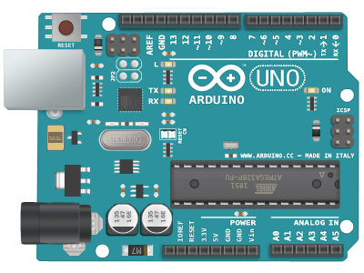

Toggle navigation
Install
Docs
GitHub
BACK TO TOP
An open-source framework for connecting sensors to the internet.
Program the real world
with any
Arduino

Connect
really cheap sensors to the Arduino
Run everything
at the same time with no delay
Do it fast
in microsecond response times
Use simple real-time libraries
that play nice together
RBD_Button
v1.0.1
C++
Arduino Button Library - Read and debounce buttons and switches.
Updated
November 5, 2015
RBD_Light
v2.1.1
C++
Arduino Light Library - Control many lights.
Updated
December 4, 2015
RBD_Motor
v2.1.0
C++
Arduino Motor Library - Control many motors.
Updated
November 14, 2015
RBD_Servo
v1.0.1
C++
Arduino Servo Library - Control many servos without delay or interrupts.
Updated
November 14, 2015
RBD_Timer
v1.1.1
Build
Passing
C++
Arduino Timer Library - Manage many timed events.
Updated
November 24, 2015
RBD_SerialManager
v1.0.0-alpha.1
C++
Arduino Serial Manager Library - A simple interface for serial communication.
Updated
November 22, 2015
Getting Started
Install the Arduino libraries and read the docs.
How To Install
See All Libraries